Medicină fizică și reabilitare
Acasă / Specialități medicale / Medicină fizică și reabilitare
32 paturi
Sectia de Medicina Fizica si de Reabilitare dispune de un numar de 32 de paturi repartizate la etajele 1 si 2 ale spitalului. Personal: 2 medici, 9 asistente medicale generaliste, 4 infirmiere, 3 ingrijitoare, 6 asistenti medicali BFT, 3 kinetoterapeuti, 2 maseuri.
Echipa medicală
MAȘef secție
Dr. Meilă Ana-Magdalena
Medic primar medicină fizică și de reabilitareIADr. Ismana Aureliana
Medic primar medicină fizică și de reabilitareTratamentul de fizioterapie se adresează următoarelor afecțiuni
- Osteofitoza calcaneana / Fasciita plantara
- Lombosciatica, Hernie de disc cervical/dorsal/lombara, Protruzie discala
- Tulburari de postura: Cifoza, Scolioza etc
- Reumatism inflamator: Spondilita anchilozanta, Poliartrita reumatoida, colangenoza, vasculite – in fazele cronice
- Reumatismul tesutului moale/ abarticular: Periartrita scapulo-humerala (PSH), Periatrita coxo-femurala, Tendinita, Bursita, Sindroame dureroase miofasciale si musculo-ligamentare
- Recuperare post-traumatica – post fractura, entorsa, luxatie, contuzie
- Sechele post-traumatice: după o entorsă, luxaţie, fractură
- Sechele neurologice: sdr de tunel carpian, Sechele dupa accident vascular cerebral (AVC) - Hemipareza, Hemiplegie, Scleroza multipla , Boala Parkinson, leziuni de nervi periferici
- Nevralgie Arnold, nevralgie de trigemen
- Migrena
- Sinuzita cronica
- Insuficienta venoasa cronica
Contraindicații fizioterapie
- În cazul celor cu pacemaker cardiac – pentru electroterapie
- Sindroame febrile
- Infectii acute, inclusiv respiratorii
- Sarcina
- Afecţiune cutanată – eritem, pustulă, iritaţie
Proceduri efectuate
Laserterapia
- Are efect analgezic, miorelaxant, antiedematos, biostimulare, vasodilatator
- Îmbunătaţeşte microcirculatia, creşte circulaţia oxigenului, utilizarea mai eficientă a glucozei, activeaza procesele metabolice la nivel celular
- Afectiuni stomatologice, dermatologice
Curenţi interferenţiali
- Au o acţiune stimulatoare asupra musculaturii scheletice, efect de stimulare asupra muşchilor netezi hipotoni, acţiune analgetică, acţiune vasomotorie cu efect hiperemizant, efecte decontracturante miorelaxante, trofice
TENS
- Poate trata stări dureroase în orice fază a bolii, care nu răspund la alte metode terapeutice indicate (farmacologice, electrice), sau care constituie contraindicaţii la alte mijloace terapeutice fizice (neoplazii)
Unde scurte/ microunde
- Are indicatii numeroase datorită efectului de endotermie (caldura se formeaza în interiorul ţesuturilor organismului), în afecţiuni ale aparatului locomotor, afecţiuni neurologice, ginecologice, ORL, dermatologice
Curenţi diadinamici
- Principalele efecte sunt cele analgetice, hiperemiante şi miorelaxante
- Sunt indicaţi în afecţiuni ale aparatului locomotor, stări post-traumatice, afecţiuni reumatice, tulburări circulatorii periferice
Curenți Trabert
- Se obţine un veritabil electromasaj (vibraţii puternice ale maselor musculare) şi are indicaţii în radiculopatii prin procese vertebrale degenerative, artroze, mialgii, miogeloze, PSH, spondilită, stări post-traumatice (contuzii, entorse, luxaţii, întinderi ligamentare)
Curentul galvanic
- Are efecte biologice asupra fibrelor nervoase motorii şi sensitive, asupra nervilor vasomotori şi asupra vaselor, asupra musculaturii striate, asupra sistemului nervos central şi asupra sistemului vegetativ
- Este indicat în procese algice diverse, stări traumatice şi post-traumatice, tulburări circulatorii arteriale periferice
- Se aplica sub forma de galvanizare simplă cu electrozi placă; ionogalvanizare; baie galvanică patru celulară
ESWT
- Efectul de bază cel mai important este cel analgezic şi anume eliminarea durerii cronice regăsite la nivelul sistemului musculo-scheletal
- Un alt efect este hiperemia - afluxul de sânge într-o zonă a corpului, care, oferind o aprovizionare mai buna cu energie a muşchilor şi a structurilor ligamentoase, duce la inhibarea spasmelor musculare
- De asemenea, prin creşterea producţiei de colagen pe care o determină, procesele de vindecare la nivelul structurilor mioscheletale şi ligamentoase sunt mai rapide
- Folosirea tehnologiei shockwave este eficientă şi în cazul celulelor calcificate din ţesutul conjunctiv, redând astfel mobilitatea articulaţiilor afectate
Ultrasunet
- Reprezintă un masaj vibrator de mare frecvenţă
- Îmbunătăţeste circulaţia locală şi metabolismul, reduce durerile locale de tip ischemic, îmbunătăţeşte capacitatea de regenerare tisulara şi produce relaxare musculară
Magnetoterapia
- Influenţează metabolismul celular, aparatul cardiovascular, excitabilitatea neuromusculară, acţioneaza asupra glandelor endocrine şi echilibreaza procesele de excitaţie şi de inhibiţie de la nivel cortical
Crioterapia
- Crioterapia localizată - se utilizează pentru a trata durerea localizată, inflamația și tumefacția articulațiilor și a mușchilor; adesea utilizată în cazul leziunilor sportive și al recuperării post-chirurgicale
Drenajul venolimfatic al memebrelor
- Drenajul limfatic este o procedură care poate avea loc atât manual, cât și mecanic, cu ajutorul unor aparate special concepute în acest scop. Este un tip de masaj prin care se pune o mică presiune asupra vaselor limfatice, pentru a mări volumul fluxului limfatic. Chiar dacă se efectuează cu ajutorul unor aparate speciale, nu este o procedură invazivă. Această procedură contribuie atât la tonifierea pielii, cât și la eliminarea din corp a toxinelor. Sistemul limfatic are o funcție de susținere a sistemului imunitar și reglează circulația sângelui în organism. Prin acest sistem se realizează schimbul de substanțe între sânge și țesuturi, având loc o filtrare a reziduurilor metabolice și substanțelor toxice. Fluidele care ajung în țesuturi, în afara sistemului circulator, sunt extrase din acele zone și sunt readuse în vasele de sânge
Diapulse
- Pulsatiile electromagnetice generate de aparatul Diapulse produc o penetrare adanca catre zona bolnava fara riscul de a incalzi tesutul. Folosirea generatorului de pulsatii electromagnetice de inalta frecventa a fost descrisa ca medicina electromagnetica de urgenta.Procedura in sine accelereaza vindecarea ranilor si scurteaza timpul de regenerare a tesuturilor afectate. Tratamentul poate fi folosit prin haine sau prin pansamentele chirurgicale
Baie galvanica 4 celulara
- Baia galvanica cu 4 celule este un mijloc indispensabil pentru tratamentul bolilor degenerative articulare, arteriopatiilor, al nevralgiei, pe baza efectelor simultane ale apei incalzite si curentului electric continuu asupra bratelor si picioarelor. Aceasta metoda de tratament este utilizata activ in lupta impotriva diferitelor boli ale sistemului circulator, ale sistemului musculo-scheletic, ale sistemului nervos sau impotriva diabetului. Procedura ajuta la imbunatatirea circulatiei sangelui si a limfei, accelereaza procesele metabolice din tesuturi, amelioreaza durerea, inflamatia si crampele
Parafina
- Tratamentul cu parafină este o formă de terapie termică profundă. Ceara de parafină lichefiată este foarte eficientă în absorbția și reținerea căldurii. Când pe zona afectată e aplicată parafina, căldura se transferă din ceară în zona dureroasă pe măsură ce ceara se solidifică. Căldura crește circulația și ameliorează durerea și rigiditatea. Pentru a ajuta la înmuierea pielii, parafina crește alimentarea cu sânge a pielii, deschizând în același timp porii și captând umezeala din straturile subiacente ale pielii
Kinetoterapia
- Obiectivele sunt de refacere a forţei musculare şi creşterea rezistenţei musculare, creşterea şi adaptarea capacităţii de efort, menţinerea şi creşterea mobilităţii articulare, ameliorarea troficităţii musculare, refacerea schemelor de mişcare, ameliorarea funcţiei de coordonare, control şi echilibru, relaxare, corectarea posturii şi aliniamentul corpului, creşterea mobilităţii articulare, reeducarea respiratorie şi a sensibilităţii
Masajul
- Acţiune locală: sedativă, decontracturanta muscular, hiperemianta (datorită îmbunătăţirii circulaţiei), resorbtivă (prin înlăturarea lichidelor interstiţiale de stază)
- Acţiune generală: stimulează funcţia aparatului respirator şi circulator, creşte metabolismul bazal, efecte favorabile asupra stării generale de sănătate
Dotări
- Aparate magnetodiaflux
- Aparate unde scurte
- Aparat microunda
- Diapulse
- Parafina
- Baie galvanica cu 4 celule
- Aparate laserterapie
- Shock Master
- Aparat Crioterapie
- Aparate ultrasunete
- Aparat drenaj limfatic memebru superior si inferior
Ambulatoriu de specialitate
ProgramLuni – Vineri: 13:00 – 20:00
- Telefon: 021 255 54 05 – interior 3223
Documente necesare
- Bilet de trimitere de la medicul de familie / medic specialist în contract cu casa de asigurări
- Cardul de sănătate
- Dovada calității de asigurat
- CI / BI / Pașaport, original și xerocopie
Galerie foto

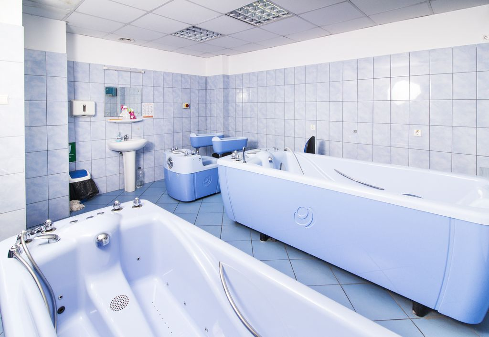

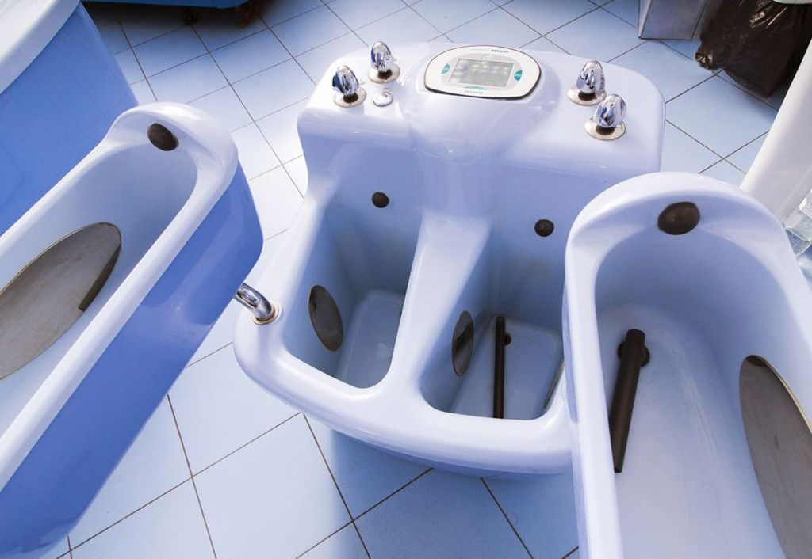

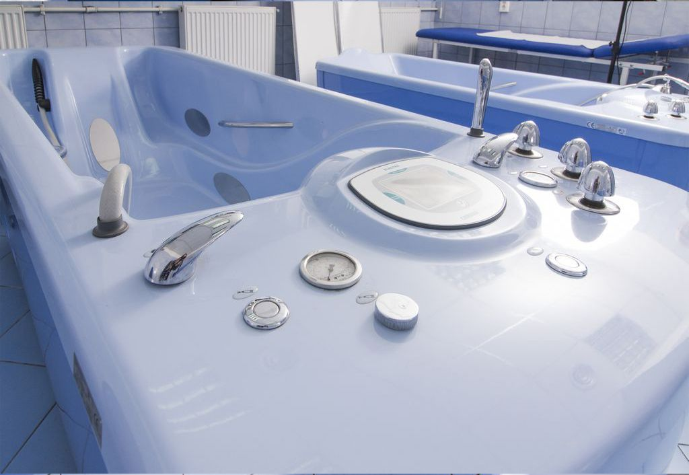

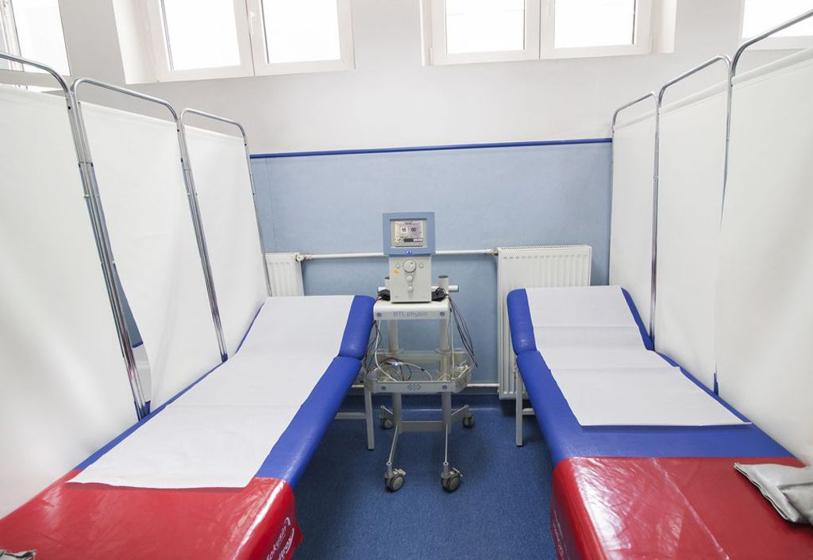

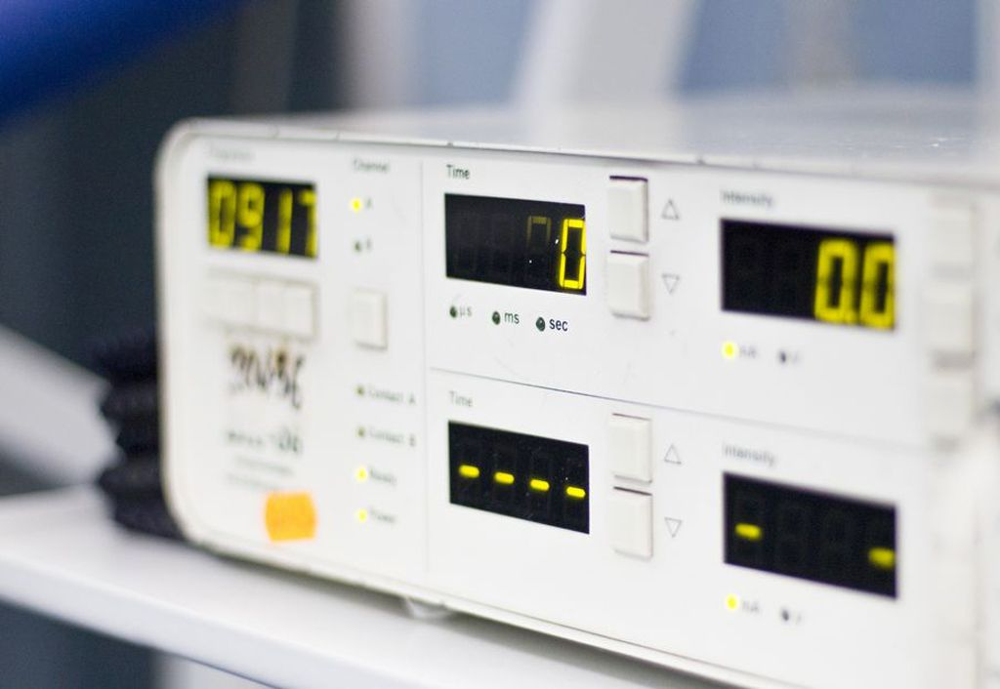

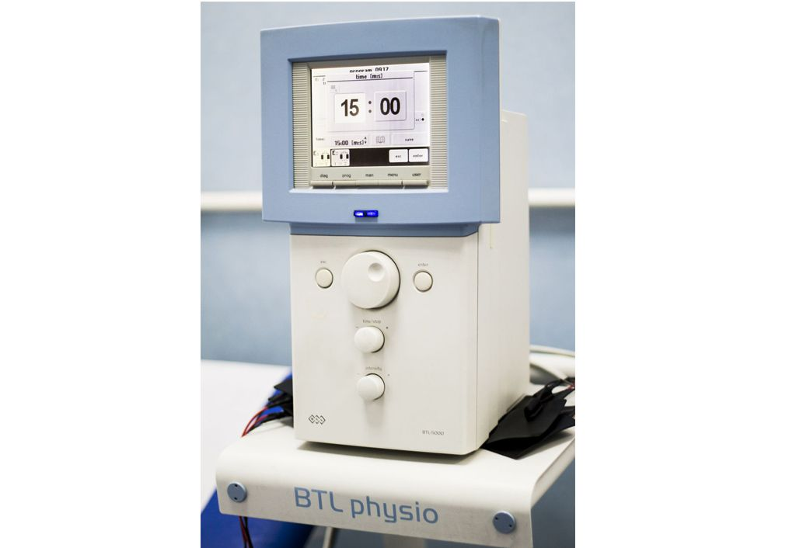

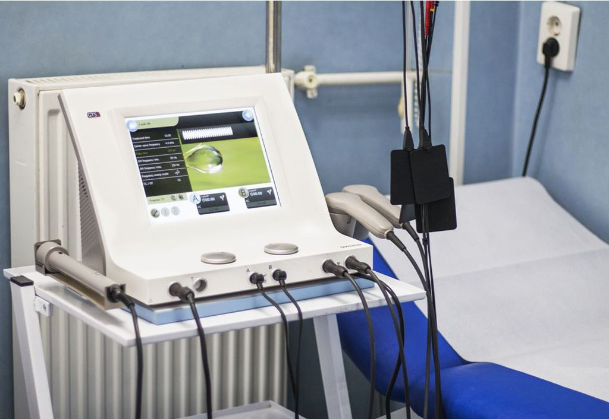

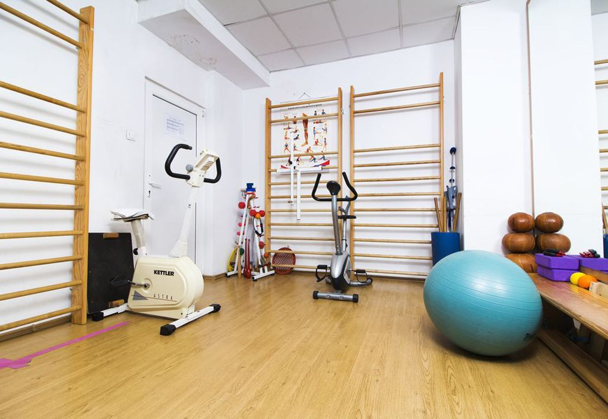

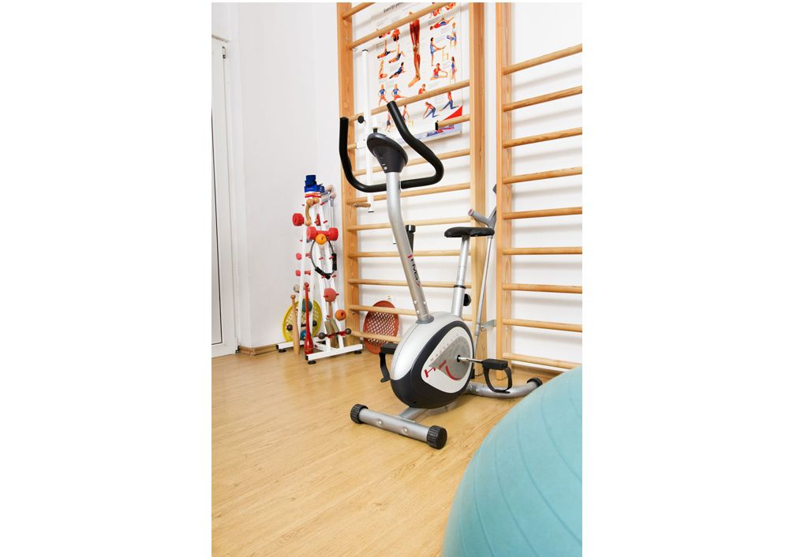

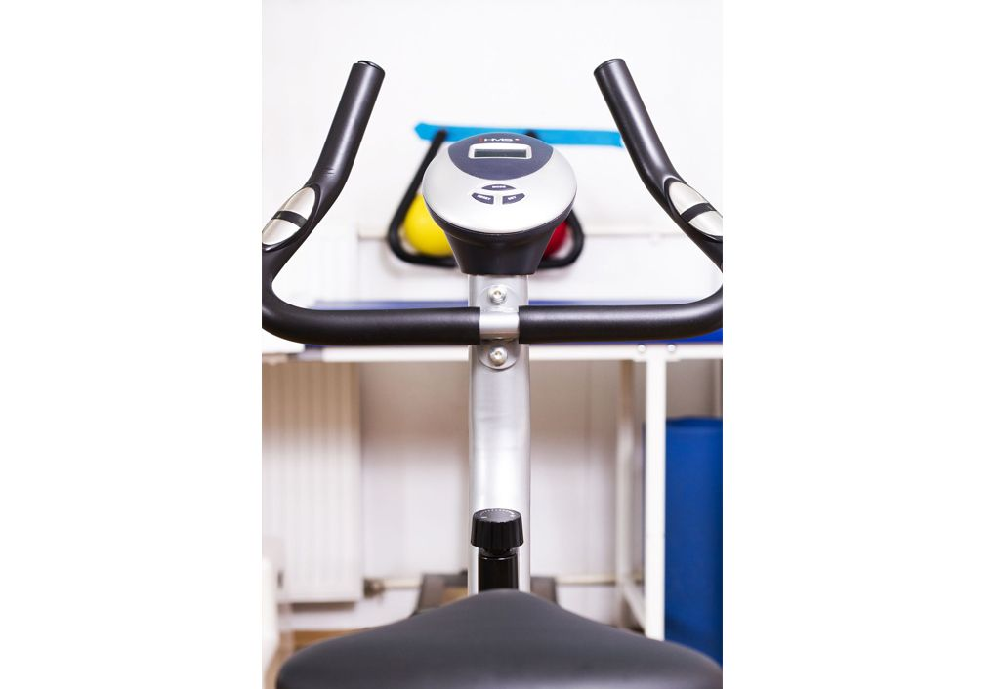

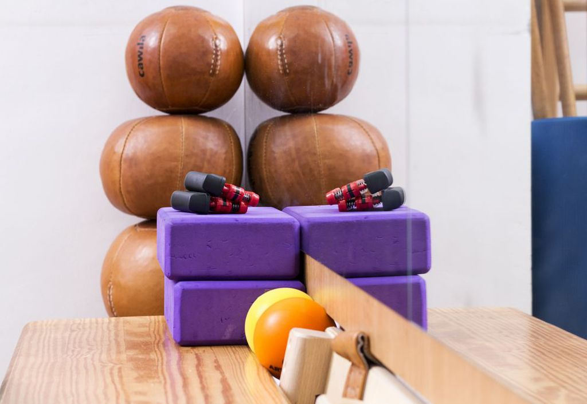

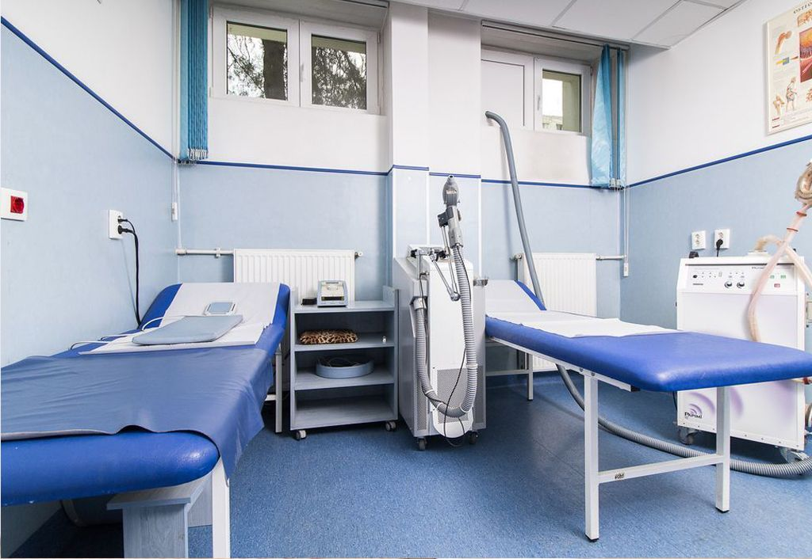

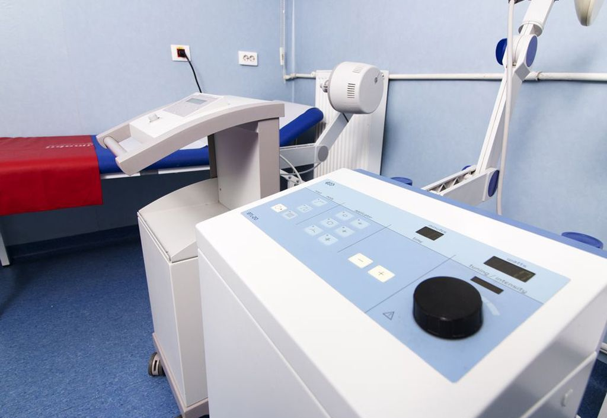

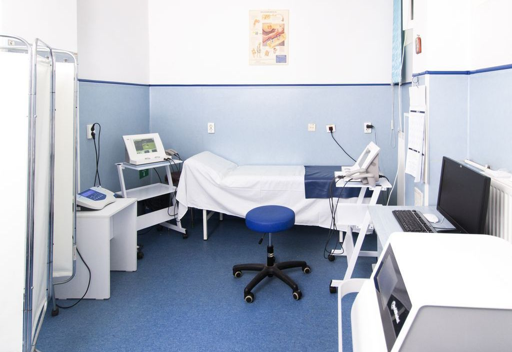

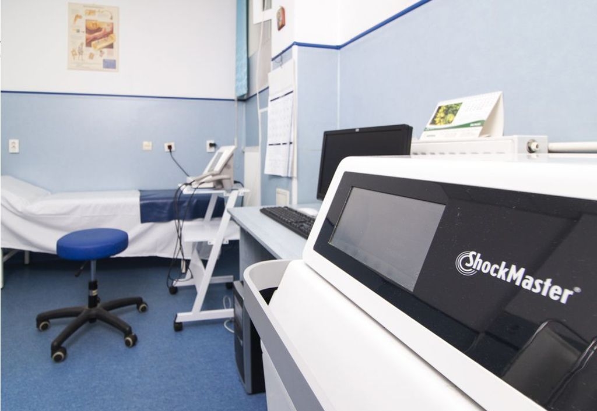
Servicii medicale cu plată
Prețurile se aplică în una din următoarele situații: pacientul nu este asigurat; pacientul nu are bilet de trimitere; pacientul nu are programare și solicită aceste servicii medicale în timpul programului de lucru al cabinetelor din ambulatoriul spitalului.
Vezi tarifele (10 servicii)
| Serviciu | Tarif |
|---|---|
| Consultație inițială medic primar | 120 lei |
| Consultație de control medic primar | 70 lei |
| Proceduri de electroterapie/sedință | 25 lei |
| Baie galvanica/ședință | 20 lei |
| Terapie cu impulsuri electromagnetice terapeutice (Papimi)/şedință | 30 lei |
| Terapie cu unde soc (ESWT)/şedință | 50 lei |
| Masaj terapeutic/regiune/şedință | 30 lei |
| Ședința kinetoterapie | 40 lei |
| Infiltrație intraarticulară/periarticulară (nu include prețul substanței) | 100 lei |
| Infiltrație părți moi (nu include prețul substanței) | 100 lei |